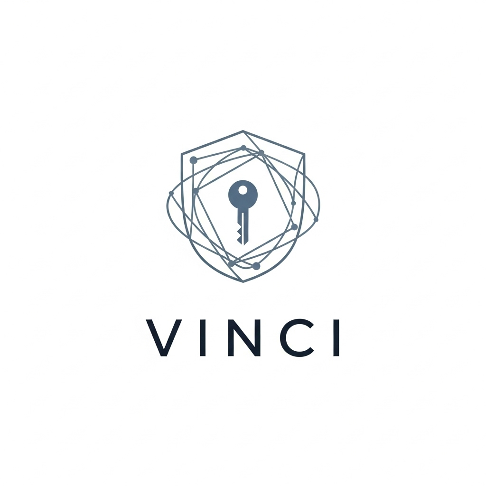

プロジェクト紹介 / Projects

対話における心理的安全性の可視化と支援を行うAIシステム。個人の発言が他者に与える安心感や場の空気をスコアとして可視化、AIが建設的なリライトや視点のバランスを提案し、誹謗中傷や排除を防ぎつつ、対話の質を高めることを目指す。

検証可能な匿名性と動的信頼性を両立する、非中央集権型の通信フレームワーク。ゼロ知識証明による自己証明と動的評判システムを組み込みんだ、次世代の通信インフラ。